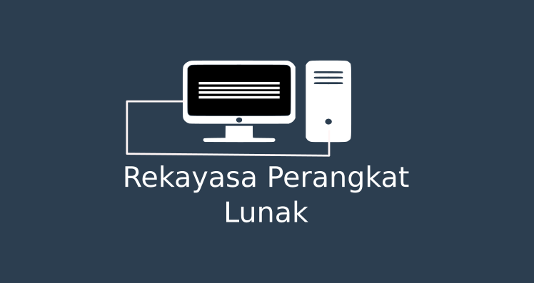
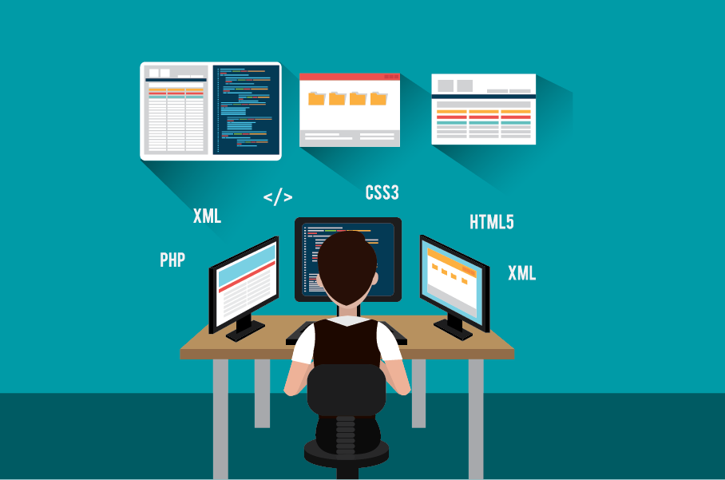

Left
Rekayasa Perangkat Lunak
Middle
Rekayasa Perangkat Lunak Rekayasa perangkat lunak (RPL, atau dalam bahasa Inggris: Software Engineering atau SE) adalah satu bidang profesi yang mendalami cara-cara pengembangan perangkat lunak termasuk pembuatan, pemeliharaan, manajemen organisasi pengembanganan perangkat lunak dan manajemen kualitas.

Sejarah Rekayasa Perangkat Lunak Istilah software engineering, pertama kali digunakan pada akhir tahun 1950-an dan sekitar awal 1960-an. Pada tahun 1968, NATO menyelenggarakan konferensi tentang software engineering di Jerman dan kemudian dilanjutkan pada tahun 1969. Meski penggunaan kata software engineering masukan konferensi tersebut menimbulkan debat tajam tentang aspek engineering dari pengembangan perangkat lunak, banyak pihak yang menganggap konferensi tersebutlah yang menjadi awal tumbuhnya profesi rekayasa perangkat lunak

Right
Rekayasa Perangkat Lunak adalah satu bidang profesi yang mendalami cara-cara pengembangan perangkat lunak termasuk pembuatan, pemeliharaan, manajemen organisasi pengembangan perangkat lunak dan manajemen kualitas.
Artikel responsif Lain